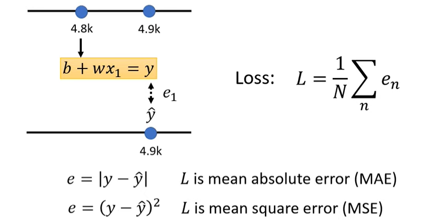
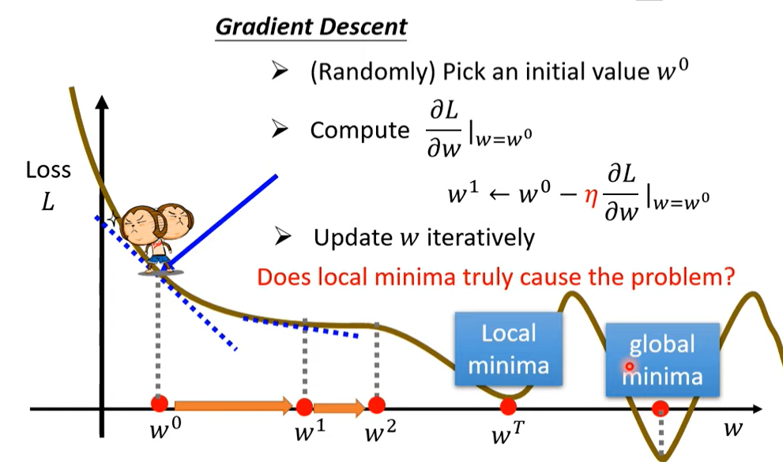

ML-01-简介
Machine Learning ≈ Looking for Function
regression
寻找具有一个输出值的函数
classification
寻找一个可以选择给定选项的函数
structured learning
让机器学会创造
How to find a function?
案例：根据YouTube后台数据预测未来数据
function with unknown parameter
根据经验提出含有未知参数的模型（model）
$$
y = b + wx_1
$$
y：预测值；b：bias；w：weight ；x：featuredefine loss from training data
L(b,w)：损失函数

optimization
- Gradient Descent
